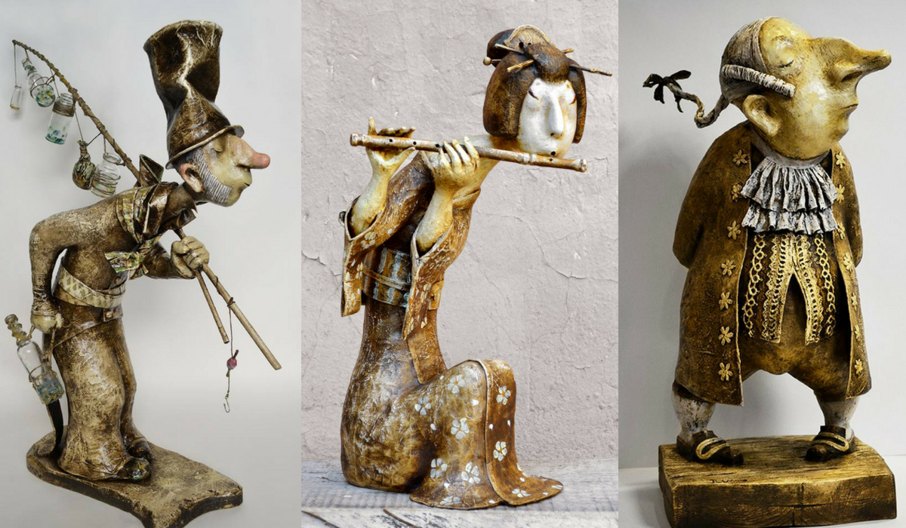
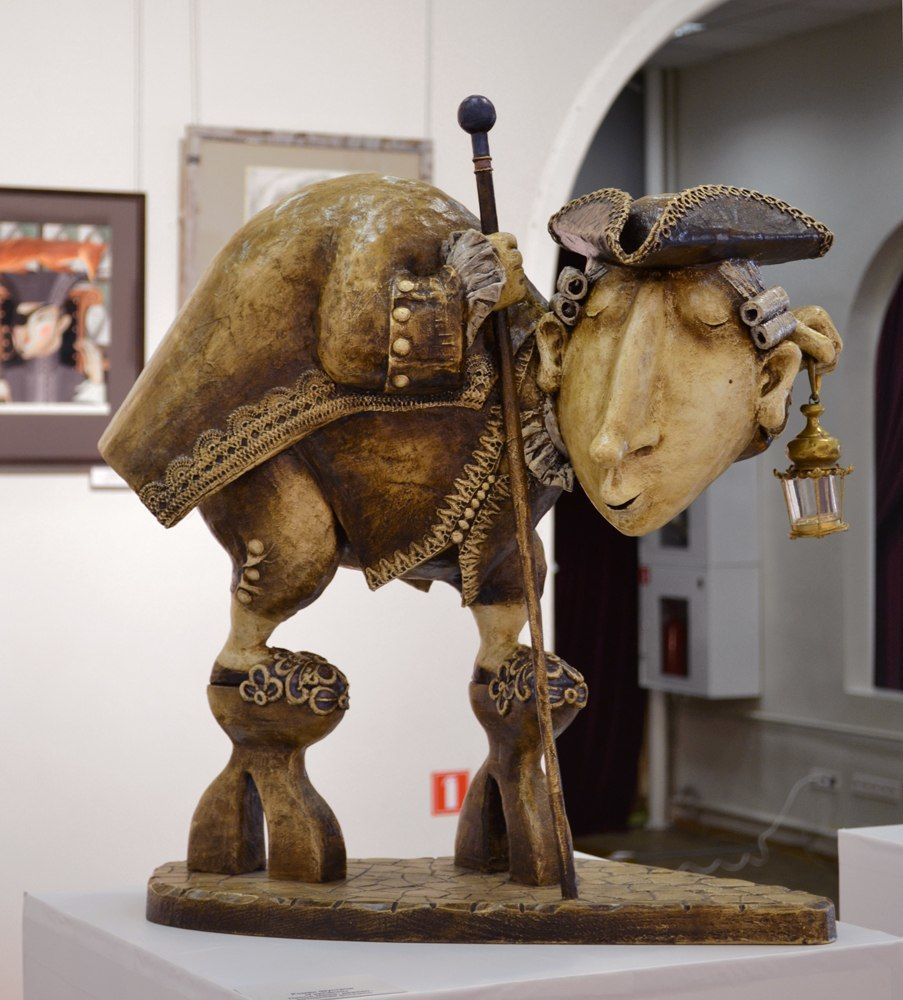
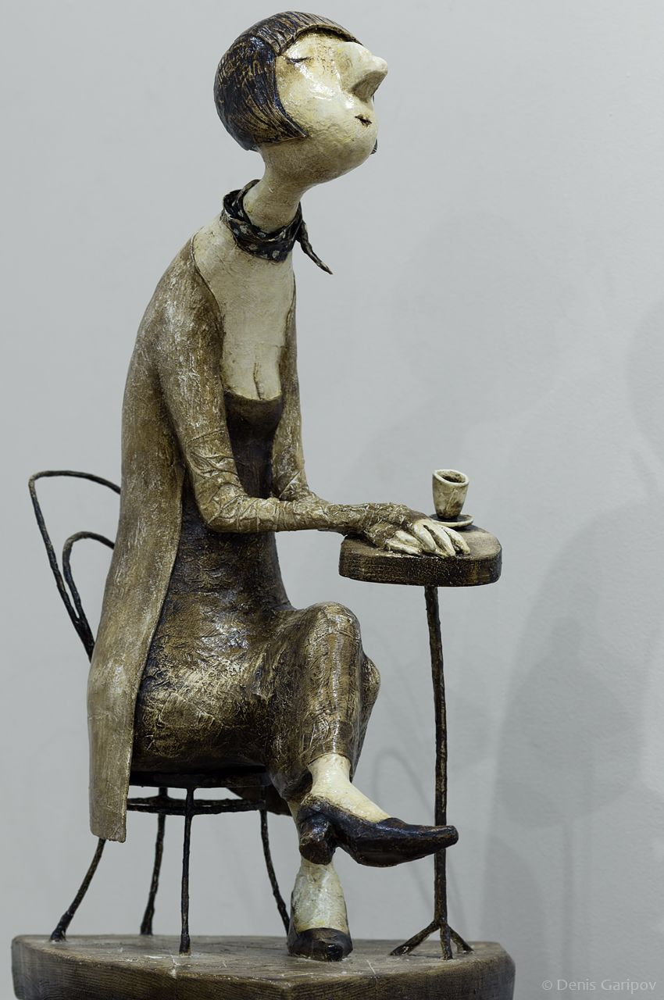
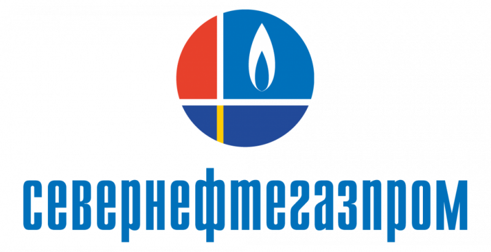

Год установки: 2018
Перед зданием компании «Севернефтегазпром» стоит под зонтиком улыбающийся дедушка с крыльями. Он очень обаятельный и интеллигентный. Это «младший брат» петербургского измайловского ангела.

Скульптура носит такое же название и является его художественным продолжением. Новоуренгойцы уже успели полюбить Ангела, часто фотографируются рядом с ним, оставляют монетки у его ног, заботливо укутывают в теплые одежды, загадывают ему желания в надежде на их исполнение.


Автор скульптуры — художник-кукольник Роман Шустров. Он родился в Ленинграде в 1959 году.


В 1985 году Роман окончил Академию художеств имени Репина и с конца 1980-х годов работал в кукольном жанре. Шустров участвовал в создании музея и галереи кукол, а также музея авторской игрушки. Преподавал в Высшей школе моды и прикладного творчества, несколько лет читал авторскую программу в Гуманитарном университете. В конце 1990-х годов Роман Шустров стал членом Союза художников России. С начала 2000-х являлся членом Международного объединения авторов кукол. Вместе с тем, он не любил называть свои работы куклами, говорил, что это скульптуры. Произведения Романа Шустрова хранятся в частных коллекциях России, Франции, Норвегии, США и других стран. Свои произведения художник выполнял в технике папье-маше.



Его кукольные скульптуры легко узнать: они немного чудаковаты и очаровательно милы. У каждой из них неизменно питерское настроение. Снаружи они как будто хмурые и серые, а внутри — свет и доброта. Автор и сам всегда был доброжелательным, положительным героем. К сожалению, в мае 2020 года, после тяжёлой болезни, Романа Шустрова не стало.
Идея поставить фигуру Ангела в Новом Уренгое принадлежит руководству ОАО «Севернефтегазпром».

После многочисленных обсуждений руководство компании утвердило проект бронзовой скульптуры, созданной Романом Шустровым. В сентябре 2018 года её доставили из северной столицы в Новый Уренгой и установили в парковой зоне вблизи предприятия.
Сначала фигура располагалась на невысоком постаменте, чтобы у прохожих складывалось ощущение прогулки Ангела по дорожкам парка.

Но уже через год Новоуренгойский Ангел обрёл новый высокий пьедестал. Большой камень гранита, добытый в уральских горах, стал надёжной опорой для скульптуры. За ней ухаживают работники службы по административно-хозяйственному обеспечению ОАО «Севернефтегазпром».
Трогательный дедушка-ангел — дань памяти мужеству наших родных и близких, тем, кто прожил нелёгкую жизнь, но смог выстоять и стать народным героем. Сам автор так говорил о своей работе: «Эти старики, пережив все невзгоды первой половины XX века, сохранили в себе оптимизм. На их жизнь выпали две гражданские войны, голод, сталинские репрессии, они пережили блокаду, потерю родных и друзей, они восстанавливали наш город из руин. Это удивительное поколение, пройдя через невероятные испытания выпавшего на их долю сурового времени, приобрело мудрость, свойственную возрасту, но каким-то чудом сохранило юношескую непосредственность, жизнерадостность и живой интерес к людям. К сожалению, этот образ почти исчез из нашей жизни. Но детство каждого из нас было украшено встречами с этими добрыми стариками». Это собирательный образ стариков из ленинградского детства, носителей особенной интеллигенции и душевной культуры.
Подойдите к Ангелу, коснитесь его руки и загадайте желание. Кто знает, а вдруг оно сбудется?